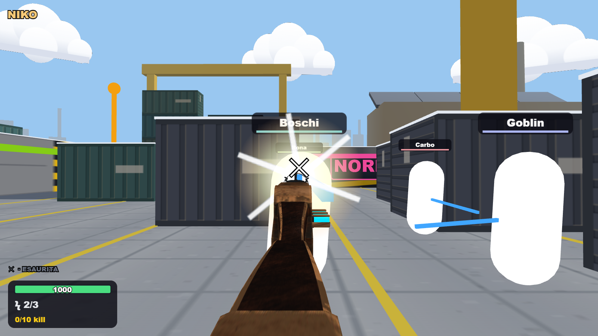

Le armi in Sparatoria e Orda
11 armi uniche in entrambe. ACR, Glock17, Remington870 e AK74U erano già presenti. La Wunderwaffe entra anche nella rotazione di Sparatoria; Orda conserva le sue regole e la Mystery Box. Una sola Ray Gun rossa.
| Arma | Sparatoria | Orda |
|---|
| AK-47 DEL GOBLIN | ✓ | ✓ |
| CECCHINO · OTTICA 4× | ✓ | ✓ |
| M4A1 · RAFFICA 3X | ✓ | ✓ |
| RAY GUN | ✓ | ✓ |
| MINIGUN | ✓ | ✓ |
| USP45 · SEMIAUTOMATICA | ✓ | ✓ |
| ACR · ASSALTO | ✓ | ✓ |
| GLOCK 17 | ✓ | ✓ |
| REMINGTON 870 | ✓ | ✓ |
| AK-74U | ✓ | ✓ |
| WUNDERWAFFE DG-2 | ✓ | ✓ |

Sparatoria · Wunderwaffe DG-2, modello originale e catena elettricaSparatoria: tre colpi, ricarica di sei secondi, fino a tre bersagli; la catena rispetta coperture, altezza e distanza. Orda mantiene catena fino a dieci nemici e Pack-a-Punch. Test mirati, typecheck e build superati. Nessun nuovo benchmark FPS. Verifiche · Apri il gioco